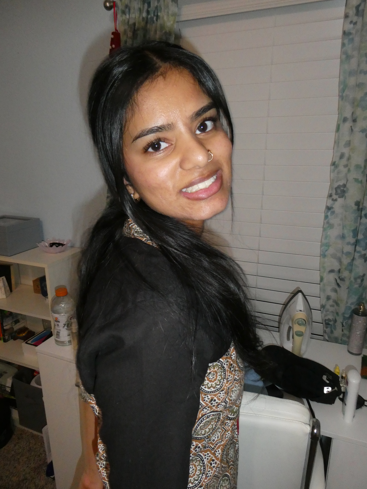

CoffeeU 📍frisco
⁃ LOVE THE MATCHA drinks very good, good study spot
⁃ I GET FREE DRINK
⁃ cons: closed on sunday 😢
⁃ ❤️: matcha, tiramisu latte, strawberry matcha
TreStelle Coffee 📍plano
⁃ ambiance is nice, plants and plenty of sunlight
⁃ seasonal drinks are good
⁃ comfortable seating
⁃ cinnamon 🥥 cold brew: it was good but coconut threw me off, mmm refreshing 😋
7th Day Cafe 📍richardson
⁃ went here for the 1st with my beloved sister 👧🏽
⁃ i personally loved earl grey matcha (sin was not a huge fan) and the brown 👁️ latte
⁃ idk if i would study as it is always so crowded but def go again for drinks
Hwasan Cafe 📍east plano
⁃ LOVE THE MATCHA drinks very good and food soo good, good study spot
⁃ ❤️: matcha, matcha croffle, yaki udon
A Day Cafe 📍richardson
⁃ aesthetic cafe with posters and plants 🪴(small but comfy seating)
⁃ not crowded but parking can be an issue
⁃ GOT UNIQUE DRINKS AND VIRAL TOAST
⁃ personally was not fan of honey butter toast (tasted too buttery for mi)/ also their 🦋 with lychee drink was too sweet for me
⁃ ✅ would def go again to study 📚 🙇🏽♀️ and try other drinks
Karmic Grounds 📍frisco
⁃ Basic cafe, drinks are good and nice study spot
⁃ cons: parking VERY limited
Elevated Coffee 📍richardson
⁃ pros: i like this place, nice aesthetic, good drinks
⁃ cons: kinda small, limited seating and parking limited
Mudleaf Cafe 📍plano
⁃ pros: nice study spot, close to utd
⁃ cons: drinks are basic (didn’t like mine but maybe should try something else)
SweeTwaters 📍many locations
⁃ pros: quiet and peaceful, good study spot, affordable
⁃ cons: basic drinks, matcha very vanillaey
Black sheep Coffee 📍east plano
⁃ pros: nice aesthetic, good study spot
⁃ cons: so um i hated the matcha, seating is limited, there’s better places,
⁃ **need to give this place another try
Escape 360 📍mckinney
⁃ Pros: drinks/ quality SO GOOD, unique fiavors/ drinks
⁃ ❤️: blue sky milk tea
⁃ cons: expensive 🤑
Lala Land Kinda Cafe 📍many locations
⁃ pros: love the aesthetic and nice drinks (unique flavors)
⁃ cons: wouldn’t study here, more of a socializing place
Bloom Cafe 📍Garland
⁃ CUTEST CAFE, VERY AESTHETIC
⁃ nice background music, studious wibes
⁃ LOTS of 🌞 and seating (main room has small tables and another room has tables for groups) many 🪞🪞🪞
⁃ 🌹latte: coffee flavoring is nice and the hint of rose is refreshing (came with cutie little pink heart straw)
⁃ sweet: white mocha with 🍓cold foam and candy hearts (it tasted good but wouldn’t get)
⁃ ❌ bathroom has the lock underneath door knob (who the heck can see the lock when it’s hidden under) played hide and seek trying to find that 🔒
MOTW: 📍west plano
⁃ pros: I ❤️ this place, very aesthetic, great study spot, unique drinks, 👌🏽 quality, a lot of seating options, BUT MOST IMPORTANTLY it has a PEACE ROOM 🤲🏽
⁃ cons: kinda far, don’t think i’d drive there that often
Arwa:📍richardson/ frisco
⁃ pros: aesthetic, unique drinks and quality 👍🏽, nice study spot 📚🙇🏽♀️
⁃ cons: n/a
Qawah House 📍mckinney (121)
⁃ pros: LOVE the aesthetic, again great drinks (unique), quiet and good study spot
⁃ ❤️: adeni chai pot,
⁃ cons: n/a
Hold My Chai 📍frisco
⁃ drinks are pretty mid (drinks not worth the price), socializing area
⁃ 💡SHIZU former workplace
⁃ seating is unique ✨
⁃ cons: would probably see sins opps 🧕🏽
Tea Latte Bar 📍richardson
⁃ pros: LOVE the little canopy seating in the back, quiet study spot, VERY close to utd, good drinks
⁃ cons: sometimes drink can be too sweet (personal opinion)
Junbi 📍richardson
⁃ matcha is actually pretty good
⁃ kinda small, limited comfy seating options for studying
⁃ good strawberry matcha
Tea Memory 📍frisco
⁃ pros: good milk tea, nice study spot
⁃ cons: not a huge fan of aesthetic for study environment
Chicha San Chen 📍carrollton
⁃ um yeah nice place with VERY AUTHENTIC TEA, personally glad i tried and id go back but wouldn’t study here… its also far
⁃ ❌ didn’t like taro balls
⁃ unique style, inside is pretty 🤩
Eiland Coffee 📍richardson
⁃ pros: good drinks, very VERY close to campus
⁃ cons: place is kinda small, feels cramped and crowded
Communion Coffee 📍richardson
⁃ pros: i guess nice study place, good seating as well, get to see richardson city water tower 🤩, good pricing
⁃ #heldcaptivebylulu so couldn’t go inside to sit :(
⁃ cons: drink options not great, location is kinda sketchy
⁃ 💭 maybe try the tea or matcha next time if i make another appearance there 😑
Rainbow Teashop 📍richardson
⁃ wide variety of drinks but it’s just boba/ milk tea place
⁃ not a good place to study but maybe to socialize but personally a no para mí
Places to try:
3205 E Park Blvd 🧔🏡🤲
BE 3.302B 📌📝
Collective Coffee (rec from friend) (allen):
Sayfani:
Shibam Coffee:
La Souq:
Good Boy Cafe:
Hola cafe: (teddy graham latte) (red velvet latte) (in downtown )
Summer Moon:
Native coffee 🪴
Cafe Hana
Whitebox roastery (cute garden area)
Mozart Cafe (carrollton)
Rainbow Teashop (close to utd)on
Whole foods (for coffee - cookie butter latte)
civil pour
heritage coffee
merit coffee
duro café
pax and beneficia
local good coffee
armor cofffee